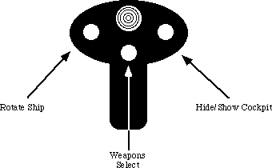
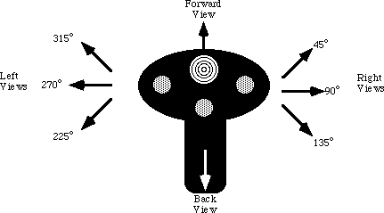

|
Table of Content | |
|
Table of Content | |
| CHAPTER TWENTY
FOUR: THE PC GAME ADAPTER (Part 4) |
| 24.7 - Patching Existing Games |
| 24.7 Patching Existing Games |
Maybe you're not quite ready to write the next million dollar game. Perhaps you'd like to get a little more enjoyment out of the games you already own. Well, this section will provide a practical application of a semiresident program that patches the Lucas Arts' XWing (Star Wars simulation) game. This program patches the XWing game to take advantage of the special features found on the CH Products' FlightStick Pro. In particular, it lets you use the throttle pot on the FSP to control the speed of the spacecraft. It also lets you program each of the buttons with up to four strings of eight characters each.
To describe how you can patch an existing game, a short description of how this patch was developed is in order. The FSPXW patch was developed by using the Soft-ICE' debugging tool. This program lets you set a breakpoint whenever an 80386 or later processor accesses a specific I/O port. Setting a breakpoint at I/O address 201h while running the xwing.exe file stopped the XWing program when it decided to read the analog and switch inputs. Disassembly of the surrounding code produced complete joystick and button read routines. After locating these routines, it was easy enough to write a program to search through memory for the code and patch in jumps to code in the FSPXW patch program.
Note that the original joystick code inside XWing works perfectly fine with the FPS. The only reason for patching into the joystick code is so our code can read the throttle every how and then and take appropriate action.
The button routines were another story altogether. The FSPXW patch needs to take control of XWing's button routines because the user of FSPXW might want to redefine a button recognized by XWing for some other purpose. Therefore, whenever XWing calls its button routine, control transfers to the button routine inside FSPXW that decides whether to pass real button information back to XWing or to fake buttons in the up position because those buttons are redefined to other functions. By default (unless you change the source code, the buttons have the following programming:

The programming of the cooley switch demonstrates an interesting feature of the FSPXW patch: you can program up to four different strings on each button. The first time you press a button, FSPXW emits the first string, the second time you press a button it emits the second string, then the third, and finally the fourth. If the string is empty, the FSPXW string skips it. The FSPXW patch uses the cooley switch to select the cockpit views. Pressing the cooley switch forward displays the forward view. Pulling the cooley switch backwards presents the rear view. However, the XWing game provides three left and right views. Pushing the cooley switch to the left or right once displays the 45 degree view. Pressing it a second time presents the 90 degree view. Pressing it to the left or right a third time provides the 135 degree view. The following diagram shows the default programming on the cooley switch:

One word of caution concerning this patch: it only works with the basic XWing game. It does not support the add-on modules (Imperial Pursuit, B-Wing, Tie Fighter, etc.). Furthermore, this patch assumes that the basic XWing code has not changed over the years. It could be that a recent release of the XWing game uses new joystick routines and the code associated with this application will not be able to locate or patch those new routines. This patch will detect such a situation and will not patch XWing if this is the case. You must have sufficient free RAM for this patch, XWing, and anything else you have loaded into memory at the same time (the exact amount of RAM XWing needs depends upon the features you've installed, a fully installed system requires slightly more than 610K free).
Without further ado, here's the FSPXW code:
.286
page 58, 132
name FSPXW
title FSPXW (Flightstick Pro driver for XWING).
subttl Copyright (C) 1994 Randall Hyde.
; FSPXW.EXE
;
; Usage:
; FSPXW
;
; This program executes the XWING.EXE program and patches it to use the
; Flightstick Pro.
byp textequ <byte ptr>
wp textequ <word ptr>
cseg segment para public 'CODE'
cseg ends
sseg segment para stack 'STACK'
sseg ends
zzzzzzseg segment para public 'zzzzzzseg'
zzzzzzseg ends
include stdlib.a
includelib stdlib.lib
matchfuncs
ifndef debug
Installation segment para public 'Install'
Installation ends
endif
CSEG segment para public 'CODE'
assume cs:cseg, ds:nothing
; Timer interrupt vector
Int1CVect dword ?
; PSP- Program Segment Prefix. Needed to free up memory before running
; the real application program.
PSP word 0
; Program Loading data structures (for DOS).
ExecStruct word 0 ;Use parent's Environment blk.
dword CmdLine ;For the cmd ln parms.
dword DfltFCB
dword DfltFCB
LoadSSSP dword ?
LoadCSIP dword ?
PgmName dword Pgm
; Variables for the throttle pot.
; LastThrottle contains the character last sent (so we only send one copy).
; ThrtlCntDn counts the number of times the throttle routine gets called.
LastThrottle byte 0
ThrtlCntDn byte 10
; Button Mask- Used to mask out the programmed buttons when the game
; reads the real buttons.
ButtonMask byte 0f0h
; The following variables allow the user to reprogram the buttons.
KeyRdf struct
Ptrs word ? ;The PTRx fields point at the
ptr2 word ? ; four possible strings of 8 chars
ptr3 word ? ; each. Each button press cycles
ptr4 word ? ; through these strings.
Index word ? ;Index to next string to output.
Cnt word ?
Pgmd word ? ;Flag = 0 if not redefined.
KeyRdf ends
; Left codes are output if the cooley switch is pressed to the left.
; Note that the strings ares actually zero terminated strings of words.
Left KeyRdf <Left1, Left2, Left3, Left4, 0, 6, 1>
Left1 word '7', 0
Left2 word '4', 0
Left3 word '1', 0
Left4 word 0
; Right codes are output if the cooley switch is pressed to the Right.
Right KeyRdf <Right1, Right2, Right3, Right4, 0, 6, 1>
Right1 word '9', 0
Right2 word '6', 0
Right3 word '3', 0
Right4 word 0
; Up codes are output if the cooley switch is pressed Up.
Up KeyRdf <Up1, Up2, Up3, Up4, 0, 2, 1>
Up1 word '8', 0
Up2 word 0
Up3 word 0
Up4 word 0
; DownKey codes are output if the cooley switch is pressed Down.
Down KeyRdf <Down1, Down2, Down3, Down4, 0, 2, 1>
Down1 word '2', 0
Down2 word 0
Down3 word 0
Down4 word 0
; Sw0 codes are output if the user pulls the trigger.(This switch is not
; redefined.)
Sw0 KeyRdf <Sw01, Sw02, Sw03, Sw04, 0, 0, 0>
Sw01 word 0
Sw02 word 0
Sw03 word 0
Sw04 word 0
; Sw1 codes are output if the user presses Sw1 (the left button
; if the user hasn't swapped the left and right buttons). Not Redefined.
Sw1 KeyRdf <Sw11, Sw12, Sw13, Sw14, 0, 0, 0>
Sw11 word 0
Sw12 word 0
Sw13 word 0
Sw14 word 0
; Sw2 codes are output if the user presses Sw2 (the middle button).
Sw2 KeyRdf <Sw21, Sw22, Sw23, Sw24, 0, 2, 1>
Sw21 word 'w', 0
Sw22 word 0
Sw23 word 0
Sw24 word 0
; Sw3 codes are output if the user presses Sw3 (the right button
; if the user hasn't swapped the left and right buttons).
Sw3 KeyRdf <Sw31, Sw32, Sw33, Sw34, 0, 0, 0>
Sw31 word 0
Sw32 word 0
Sw33 word 0
Sw34 word 0
; Switch status buttons:
CurSw byte 0
LastSw byte 0
;****************************************************************************
; FSPXW patch begins here. This is the memory resident part. Only put code
; which which has to be present at run-time or needs to be resident after
; freeing up memory.
;****************************************************************************
Main proc
mov cs:PSP, ds
mov ax, cseg ;Get ptr to vars segment
mov ds, ax
; Get the current INT 1Ch interrupt vector:
mov ax, 351ch
int 21h
mov wp Int1CVect, bx
mov wp Int1CVect+2, es
; The following call to MEMINIT assumes no error occurs. If it does,
; we're hosed anyway.
mov ax, zzzzzzseg
mov es, ax
mov cx, 1024/16
meminit2
; Do some initialization before running the game. These are calls to the
; initialization code which gets dumped before actually running XWING.
call far ptr ChkBIOS15
call far ptr Identify
call far ptr Calibrate
; If any switches were programmed, remove those switches from the
; ButtonMask:
mov al, 0f0h ;Assume all buttons are okay.
cmp sw0.pgmd, 0
je Sw0NotPgmd
and al, 0e0h ;Remove sw0 from contention.
Sw0NotPgmd:
cmp sw1.pgmd, 0
je Sw1NotPgmd
and al, 0d0h ;Remove Sw1 from contention.
Sw1NotPgmd:
cmp sw2.pgmd, 0
je Sw2NotPgmd
and al, 0b0h ;Remove Sw2 from contention.
Sw2NotPgmd:
cmp sw3.pgmd, 0
je Sw3NotPgmd
and al, 070h ;Remove Sw3 from contention.
Sw3NotPgmd:
mov ButtonMask, al ;Save result as button mask
; Now, free up memory from ZZZZZZSEG on to make room for XWING.
; Note: Absolutely no calls to UCR Standard Library routines from
; this point forward! (ExitPgm is okay, it's just a macro which calls DOS.)
; Note that after the execution of this code, none of the code & data
; from zzzzzzseg on is valid.
mov bx, zzzzzzseg
sub bx, PSP
inc bx
mov es, PSP
mov ah, 4ah
int 21h
jnc GoodRealloc
print
byte "Memory allocation error."
byte cr,lf,0
jmp Quit
GoodRealloc:
; Now load the XWING program into memory:
mov bx, seg ExecStruct
mov es, bx
mov bx, offset ExecStruc ;Ptr to program record.
lds dx, PgmName
mov ax, 4b01h ;Load, do not exec, pgm
int 21h
jc Quit ;If error loading file.
; Search for the joystick code in memory:
mov si, zzzzzzseg
mov ds, si
xor si, si
mov di, cs
mov es, di
mov di, offset JoyStickCode
mov cx, JoyLength
call FindCode
jc Quit ;If didn't find joystick code.
; Patch the XWING joystick code here
mov byp ds:[si], 09ah ;Far call
mov wp ds:[si+1], offset ReadGame
mov wp ds:[si+3], cs
; Find the Button code here.
mov si, zzzzzzseg
mov ds, si
xor si, si
mov di, cs
mov es, di
mov di, offset ReadSwCode
mov cx, ButtonLength
call FindCode
jc Quit
; Patch the button code here.
mov byp ds:[si], 9ah
mov wp ds:[si+1], offset ReadButtons
mov wp ds:[si+3], cs
mov byp ds:[si+5], 90h ;NOP.
; Patch in our timer interrupt handler:
mov ax, 251ch
mov dx, seg MyInt1C
mov ds, dx
mov dx, offset MyInt1C
int 21h
; Okay, start the XWING.EXE program running
mov ah, 62h ;Get PSP
int 21h
mov ds, bx
mov es, bx
mov wp ds:[10], offset Quit
mov wp ds:[12], cs
mov ss, wp cseg:LoadSSSP+2
mov sp, wp cseg:LoadSSSP
jmp dword ptr cseg:LoadCSIP
Quit: lds dx, cs:Int1CVect ;Restore timer vector.
mov ax, 251ch
int 21h
ExitPgm
Main endp
;****************************************************************************
;
; ReadGame- This routine gets called whenever XWing reads the joystick.
; On every 10th call it will read the throttle pot and send
; appropriate characters to the type ahead buffer, if
; necessary.
assume ds:nothing
ReadGame proc far
dec cs:ThrtlCntDn ;Only do this each 10th time
jne SkipThrottle ; XWING calls the joystick
mov cs:ThrtlCntDn, 10 ; routine.
push ax
push bx ;No need to save bp, dx, or cx as
push di ; XWING preserves these.
mov ah, 84h
mov dx, 103h ;Read the throttle pot
int 15h
; Convert the value returned by the pot routine into the four characters
; 0..63:"\", 64..127:"[", 128..191:"]", 192..255:<bs>, to denote zero, 1/3,
; 2/3, and full power, respectively.
mov dl, al
mov ax, "\" ;Zero power
cmp dl, 192
jae SetPower
mov ax, "[" ;1/3 power.
cmp dl, 128
jae SetPower
mov ax, "]" ;2/3 power.
cmp dl, 64
jae SetPower
mov ax, 8 ;BS, full power.
SetPower: cmp al, cs:LastThrottle
je SkipPIB
mov cs:LastThrottle, al
call PutInBuffer
SkipPIB: pop di
pop bx
pop ax
SkipThrottle: neg bx ;XWING returns data in these registers.
neg di ;We patched the NEG and STI instrs
sti ; so do that here.
ret
ReadGame endp
assume ds:nothing
ReadButtons proc far
mov ah, 84h
mov dx, 0
int 15h
not al
and al, ButtonMask ;Turn off pgmd buttons.
ret
ReadButtons endp
; MyInt1C- Called every 1/18th second. Reads switches and decides if it
; should shove some characters into the type ahead buffer.
assume ds:cseg
MyInt1c proc far
push ds
push ax
push bx
push dx
mov ax, cseg
mov ds, ax
mov al, CurSw
mov LastSw, al
mov dx, 900h ;Read the 8 switches.
mov ah, 84h
int 15h
mov CurSw, al
xor al, LastSw ;See if any changes
jz NoChanges
and al, CurSw ;See if sw just went down.
jz NoChanges
; If a switch has just gone down, output an appropriate set of scan codes
; for it, if that key is active. Note that pressing *any* key will reset
; all the other key indexes.
test al, 1 ;See if Sw0 (trigger) was pulled.
jz NoSw0
cmp Sw0.Pgmd, 0
je NoChanges
mov ax, 0
mov Left.Index, ax ;Reset the key indexes for all keys
mov Right.Index, ax ; except SW0.
mov Up.Index, ax
mov Down.Index, ax
mov Sw1.Index, ax
mov Sw2.Index, ax
mov Sw3.Index, ax
mov bx, Sw0.Index
mov ax, Sw0.Index
mov bx, Sw0.Ptrs[bx]
add ax, 2
cmp ax, Sw0.Cnt
jb SetSw0
mov ax, 0
SetSw0: mov Sw0.Index, ax
call PutStrInBuf
jmp NoChanges
NoSw0: test al, 2 ;See if Sw1 (left sw) was pressed.
jz NoSw1
cmp Sw1.Pgmd, 0
je NoChanges
mov ax, 0
mov Left.Index, ax ;Reset the key indexes for all keys
mov Right.Index, ax ; except Sw1.
mov Up.Index, ax
mov Down.Index, ax
mov Sw0.Index, ax
mov Sw2.Index, ax
mov Sw3.Index, ax
mov bx, Sw1.Index
mov ax, Sw1.Index
mov bx, Sw1.Ptrs[bx]
add ax, 2
cmp ax, Sw1.Cnt
jb SetSw1
mov ax, 0
SetSw1: mov Sw1.Index, ax
call PutStrInBuf
jmp NoChanges
NoSw1: test al, 4 ;See if Sw2 (middle sw) was pressed.
jz NoSw2
cmp Sw2.Pgmd, 0
je NoChanges
mov ax, 0
mov Left.Index, ax ;Reset the key indexes for all keys
mov Right.Index, ax ; except Sw2.
mov Up.Index, ax
mov Down.Index, ax
mov Sw0.Index, ax
mov Sw1.Index, ax
mov Sw3.Index, ax
mov bx, Sw2.Index
mov ax, Sw2.Index
mov bx, Sw2.Ptrs[bx]
add ax, 2
cmp ax, Sw2.Cnt
jb SetSw2
mov ax, 0
SetSw2: mov Sw2.Index, ax
call PutStrInBuf
jmp NoChanges
NoSw2: test al, 8 ;See if Sw3 (right sw) was pressed.
jz NoSw3
cmp Sw3.Pgmd, 0
je NoChanges
mov ax, 0
mov Left.Index, ax ;Reset the key indexes for all keys
mov Right.Index, ax ; except Sw3.
mov Up.Index, ax
mov Down.Index, ax
mov Sw0.Index, ax
mov Sw1.Index, ax
mov Sw2.Index, ax
mov bx, Sw3.Index
mov ax, Sw3.Index
mov bx, Sw3.Ptrs[bx]
add ax, 2
cmp ax, Sw3.Cnt
jb SetSw3
mov ax, 0
SetSw3: mov Sw3.Index, ax
call PutStrInBuf
jmp NoChanges
NoSw3: test al, 10h ;See if Cooly was pressed upwards.
jz NoUp
cmp Up.Pgmd, 0
je NoChanges
mov ax, 0
mov Right.Index, ax ;Reset all but Up.
mov Left.Index, ax
mov Down.Index, ax
mov Sw0.Index, ax
mov Sw1.Index, ax
mov Sw2.Index, ax
mov Sw3.Index, ax
mov bx, Up.Index
mov ax, Up.Index
mov bx, Up.Ptrs[bx]
add ax, 2
cmp ax, Up.Cnt
jb SetUp
mov ax, 0
SetUp: mov Up.Index, ax
call PutStrInBuf
jmp NoChanges
NoUp: test al, 20h ;See if Cooley was pressed left.
jz NoLeft
cmp Left.Pgmd, 0
je NoChanges
mov ax, 0
mov Right.Index, ax ;Reset all but Left.
mov Up.Index, ax
mov Down.Index, ax
mov Sw0.Index, ax
mov Sw1.Index, ax
mov Sw2.Index, ax
mov Sw3.Index, ax
mov bx, Left.Index
mov ax, Left.Index
mov bx, Left.Ptrs[bx]
add ax, 2
cmp ax, Left.Cnt
jb SetLeft
mov ax, 0
SetLeft: mov Left.Index, ax
call PutStrInBuf
jmp NoChanges
NoLeft: test al, 40h ;See if Cooley was pressed Right
jz NoRight
cmp Right.Pgmd, 0
je NoChanges
mov ax, 0
mov Left.Index, ax ;Reset all but Right.
mov Up.Index, ax
mov Down.Index, ax
mov Sw0.Index, ax
mov Sw1.Index, ax
mov Sw2.Index, ax
mov Sw3.Index, ax
mov bx, Right.Index
mov ax, Right.Index
mov bx, Right.Ptrs[bx]
add ax, 2
cmp ax, Right.Cnt
jb SetRight
mov ax, 0
SetRight: mov Right.Index, ax
call PutStrInBuf
jmp NoChanges
NoRight: test al, 80h ;See if Cooly was pressed Downward.
jz NoChanges
cmp Down.Pgmd, 0
je NoChanges
mov ax, 0
mov Left.Index, ax ;Reset all but Down.
mov Up.Index, ax
mov Right.Index, ax
mov Sw0.Index, ax
mov Sw1.Index, ax
mov Sw2.Index, ax
mov Sw3.Index, ax
mov bx, Down.Index
mov ax, Down.Index
mov bx, Down.Ptrs[bx]
add ax, 2
cmp ax, Down.Cnt
jb SetDown
mov ax, 0
SetDown: mov Down.Index, ax
call PutStrInBuf
NoChanges: pop dx
pop bx
pop ax
pop ds
jmp cs:Int1CVect
MyInt1c endp
assume ds:nothing
; PutStrInBuf- BX points at a zero terminated string of words.
; Output each word by calling PutInBuffer.
PutStrInBuf proc near
push ax
push bx
PutLoop: mov ax, [bx]
test ax, ax
jz PutDone
call PutInBuffer
add bx, 2
jmp PutLoop
PutDone: pop bx
pop ax
ret
PutStrInBuf endp
; PutInBuffer- Outputs character and scan code in AX to the type ahead
; buffer.
assume ds:nothing
KbdHead equ word ptr ds:[1ah]
KbdTail equ word ptr ds:[1ch]
KbdBuffer equ word ptr ds:[1eh]
EndKbd equ 3eh
Buffer equ 1eh
PutInBuffer proc near
push ds
push bx
mov bx, 40h
mov ds, bx
pushf
cli ;This is a critical region!
mov bx, KbdTail ;Get ptr to end of type
inc bx ; ahead buffer and make room
inc bx ; for this character.
cmp bx, buffer+32 ;At physical end of buffer?
jb NoWrap
mov bx, buffer ;Wrap back to 1eH if at end.
;
NoWrap: cmp bx, KbdHead ;Buffer overrun?
je PIBDone
xchg KbdTail, bx ;Set new, get old, ptrs.
mov ds:[bx], ax ;Output AX to old location.
PIBDone: popf ;Restore interrupts
pop bx
pop ds
ret
PutInBuffer endp
;****************************************************************************
;
; FindCode: On entry, ES:DI points at some code in *this* program which
; appears in the ATP game. DS:SI points at a block of memory
; in the XWing game. FindCode searches through memory to find the
; suspect piece of code and returns DS:SI pointing at the start of
; that code. This code assumes that it *will* find the code!
; It returns the carry clear if it finds it, set if it doesn't.
FindCode proc near
push ax
push bx
push dx
DoCmp: mov dx, 1000h
CmpLoop: push di ;Save ptr to compare code.
push si ;Save ptr to start of string.
push cx ;Save count.
repe cmpsb
pop cx
pop si
pop di
je FoundCode
inc si
dec dx
jne CmpLoop
sub si, 1000h
mov ax, ds
inc ah
mov ds, ax
cmp ax, 9000h
jb DoCmp
pop dx
pop bx
pop ax
stc
ret
FoundCode: pop dx
pop bx
pop ax
clc
ret
FindCode endp
;****************************************************************************
;
; Joystick and button routines which appear in XWing game. This code is
; really data as the INT 21h patch code searches through memory for this code
; after loading a file from disk.
JoyStickCode proc near
sti
neg bx
neg di
pop bp
pop dx
pop cx
ret
mov bp, bx
in al, dx
mov bl, al
not al
and al, ah
jnz $+11h
in al, dx
JoyStickCode endp
EndJSC:
JoyLength = EndJSC-JoyStickCode
ReadSwCode proc
mov dx, 201h
in al, dx
xor al, 0ffh
and ax, 0f0h
ReadSwCode endp
EndRSC:
ButtonLength = EndRSC-ReadSwCode
cseg ends
Installation segment
; Move these things here so they do not consume too much space in the
; resident part of the patch.
DfltFCB byte 3," ",0,0,0,0,0
CmdLine byte 2, " ", 0dh, 126 dup (" ") ;Cmd line for program
Pgm byte "XWING.EXE",0
byte 128 dup (?) ;For user's name
; ChkBIOS15- Checks to see if the INT 15 driver for FSPro is present in memory.
ChkBIOS15 proc far
mov ah, 84h
mov dx, 8100h
int 15h
mov di, bx
strcmpl
byte "CH Products:Flightstick Pro",0
jne NoDriverLoaded
ret
NoDriverLoaded:
print
byte "CH Products SGDI driver for Flightstick Pro is not "
byte "loaded into memory.",cr,lf
byte "Please run FSPSGDI before running this program."
byte cr,lf,0
exitpgm
ChkBIOS15 endp
;****************************************************************************
;
; Identify- Prints a sign-on message.
assume ds:nothing
Identify proc far
; Print a welcome string. Note that the string "VersionStr" will be
; modified by the "version.exe" program each time you assemble this code.
print
byte cr,lf,lf
byte "X W I N G P A T C H",cr,lf
byte "CH Products Flightstick Pro",cr,lf
byte "Copyright 1994, Randall Hyde",cr,lf
byte lf
byte 0
ret
Identify endp
;****************************************************************************
;
; Calibrate the throttle down here:
assume ds:nothing
Calibrate proc far
print
byte cr,lf,lf
byte "Calibration:",cr,lf,lf
byte "Move the throttle to one extreme and press any "
byte "button:",0
call Wait4Button
mov ah, 84h
mov dx, 1h
int 15h
push dx ;Save pot 3 reading.
print
byte cr,lf
byte "Move the throttle to the other extreme and press "
byte "any button:",0
call Wait4Button
mov ah, 84h
mov dx, 1
int 15h
pop bx
mov ax, dx
cmp ax, bx
jb RangeOkay
xchg ax, bx
RangeOkay: mov cx, bx ;Compute a centered value.
sub cx, ax
shr cx, 1
add cx, ax
mov ah, 84h
mov dx, 303h ;Calibrate pot three.
int 15h
ret
Calibrate endp
Wait4Button proc near
mov ah, 84h ;First, wait for all buttons
mov dx, 0 ; to be released.
int 15h
and al, 0F0h
cmp al, 0F0h
jne Wait4Button
mov cx, 0
Delay: loop Delay
Wait4Press: mov ah, 1 ;Eat any characters from the
int 16h ; keyboard which come along, and
je NoKbd ; handle ctrl-C as appropriate.
getc
NoKbd: mov ah, 84h ;Now wait for any button to be
mov dx, 0 ; pressed.
int 15h
and al, 0F0h
cmp al, 0F0h
je Wait4Press
ret
Wait4Button endp
Installation ends
sseg segment para stack 'STACK'
word 256 dup (0)
endstk word ?
sseg ends
zzzzzzseg segment para public 'zzzzzzseg'
Heap byte 1024 dup (0)
zzzzzzseg ends
end Main
Chapter Twenty Four: The PC Game
Adapter (Part 4)
29 SEP 1996